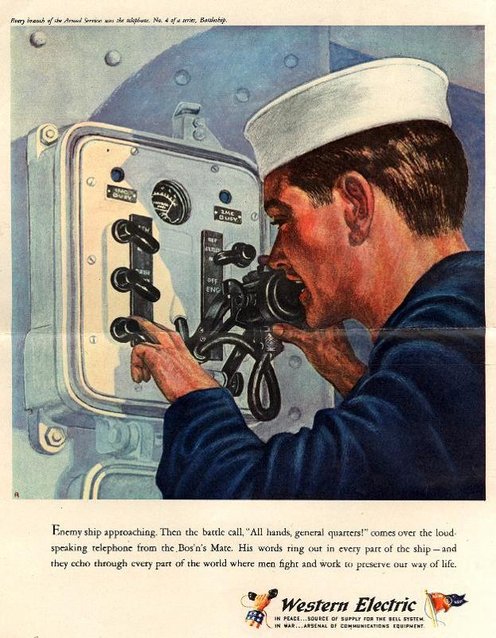

World War II
Introduction
 World War II was not the bloodiest war in American history, that unfortunate distinction goes to the Civil War, nor was World War II America's longest war. The American Revolution and the Vietnam War both outlasted it, and at this writing America's conflicts in Iraq and Afghanistan have no definite end in sight. In terms of its impact on American society and the world, however, World War II certainly ranks among the biggest events in American history and in the history of the world.
World War II was not the bloodiest war in American history, that unfortunate distinction goes to the Civil War, nor was World War II America's longest war. The American Revolution and the Vietnam War both outlasted it, and at this writing America's conflicts in Iraq and Afghanistan have no definite end in sight. In terms of its impact on American society and the world, however, World War II certainly ranks among the biggest events in American history and in the history of the world.
As the decade of the 1930s closed, America was struggling to get out of the worst depression in its history. American presence was felt worldwide and American commerce and industry, despite the pullbacks of the Depression era, weighed heavily in the international economic balance of power. Yet in the late 1930s America was withdrawn, focused on itself, and Americans were not sure that the path which lay ahead would lead to renewed prosperity and dignity. Franklin Roosevelt was by many measures the strongest president in American history, but his first two terms had not been without serious controversy. The New Deal had been for some a beacon of hope; for others it was a symbol of government run amok. Although there was much in American society to celebrate, dark clouds had not yet disappeared over the horizon.
Americans of 1945, if they had taken the time to look back on themselves a mere six years earlier, would not have recognized the face in the mirror. Except for the attack on Pearl Harbor, American soil had been virtually untouched by war. The massive destruction of infrastructure and resources that devastated every other major nation on earth had no parallel in the New World. American industry had supplied the lion's share of the matériel and equipment needed to fight the Axis. The American workforce, bolstered by millions of female workers, was capable of stupendous feats of production. Although the war had cost billions of dollars, the American economy was strong and healthy. Demand for consumer goods had been put aside while factories produced weapons and supplies for war. When the guns fell silent, those demands would come roaring back as industry converted from producing wartime to peacetime goods. The demand for automobiles, appliances, and homes would fuel the passions that produced the boomer generation.
In the international arena America stood alone. The United States was the only superpower, and the only atomic power. In the postwar years American generosity would help to rebuild the devastated cities of Europe, and American political wisdom would help to shape a modern democracy in Japan. United Nations would be centered in New York City, the unofficial capital of the world. The specter of communism would be contained, and America stood ready to meet whatever challenges the rest of the world might present. In some ways the first years after World War II were the high point of American history, the peak of American prestige and power. Americans had won the "good war" and were prepared to lead the world for the rest of the century. The 20th century was the American Century.